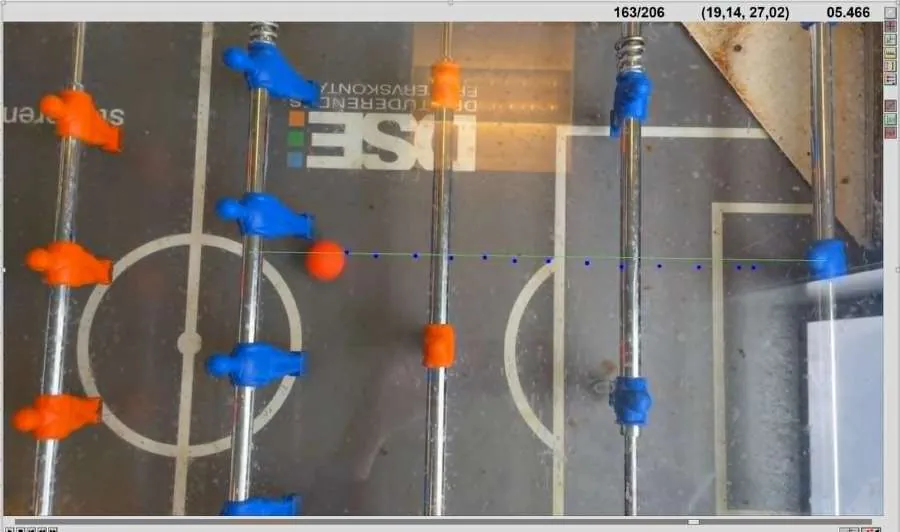
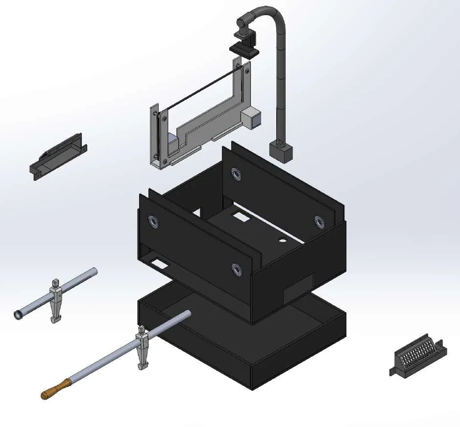
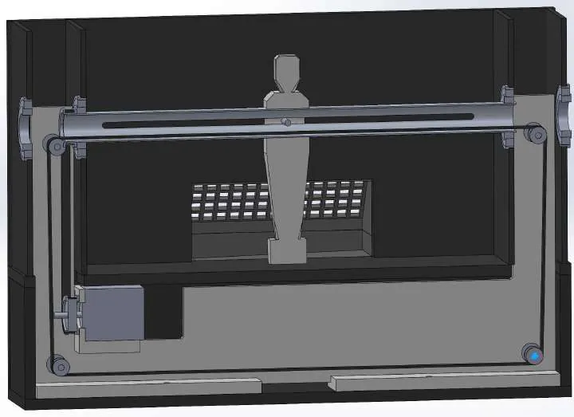
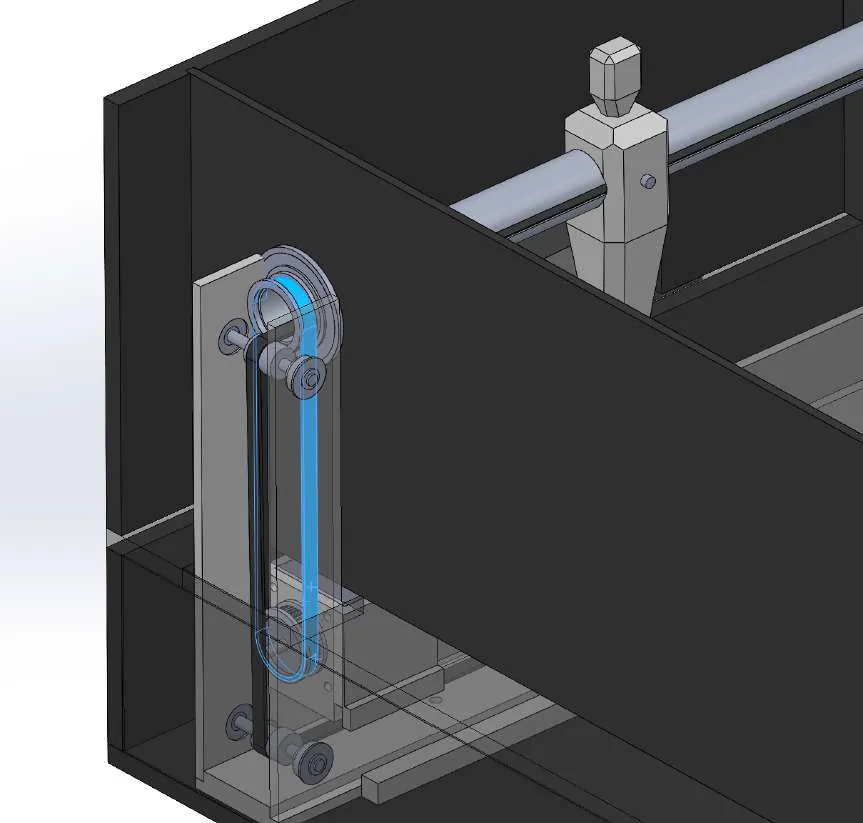
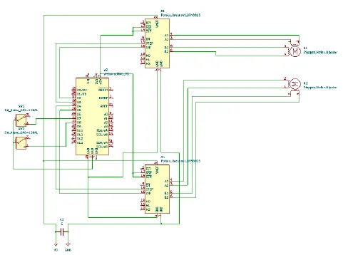

← Alle projekterArk 04 af 08
Kursus 62800 Introduktion til mekatronik- og robotsystemer · DTU · hold på 2
Målmandsrobot til bordfodbold
En robotmålmand til bordfodbold. Et kamera over bordet følger bolden, og stepmotorer flytter og svinger målmanden for at blokere skud.
- Sammenhæng
- Kursus 62800, DTU
- Hold
- 2 personer
- Min rolle
- Krav, hastighedstest, mekanisk konstruktion & CAD
- Værktøjer
- Arduino, Nema 17, Python/OpenCV, CAD
- 1,06 m/s
- skudhastighed (median), 67 % af et standardbord
- 0,60 m/s
- sidehastighed (median), 138 % af et standardbord
- 2
- stepmotorakser: sidebevægelse og skud
Hvad vi byggede
- Et specialbygget bord med en spilleflade på 39,7 × 53,2 cm, malet sort for at give kameraet god kontrast.
- Et kamera på en mast af ti 3D-printede dele over banen. Python med OpenCV følger bolden og målmanden ud fra farve, kalibreret fra pixelpositioner til målmandspositioner.
- To Nema 17-stepmotorer styret af en Arduino (AccelStepper): den ene flytter målmanden på en 6 mm tandrem skjult i de hule sidevægge, den anden svinger målmanden for at skyde. Endestop kalibrerer bevægelsesområdet.
- Et elektronikrum under banen til Arduino, stepmotordrivere og remmekanik.

Min del
Hvad jeg lavede på holdet på to
- Skrev kravspecifikationen.
- Gennemførte proof of concept-forsøg med skudhastighed og sidehastighed, som validerede konceptet.
- Stod for den mekaniske konstruktion og CAD.
- Arbejdede med Arduino og stepmotorstyring sammen med min holdkammerat.
Resultater og begrænsninger
Vi filmede skud og sidebevægelser på et standardbord og på vores robotbord og analyserede videoerne i LoggerPro.
- Skudhastighed (median): 1,06 m/s for robotten mod 1,58 m/s på et standardbord, ca. 67 %.
- Sidehastighed (median): 0,60 m/s for robotten mod 0,43 m/s på et standardbord, ca. 138 %.
- Sporing og styring i realtid fungerede. Vi fandt svagheder ved tandremsspændingen, tandhjulets greb, kameramastens rotation og den dårlige adgang til elektronikrummet.









